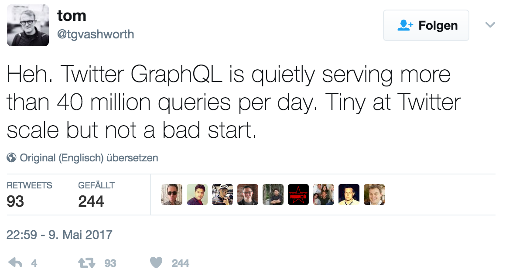
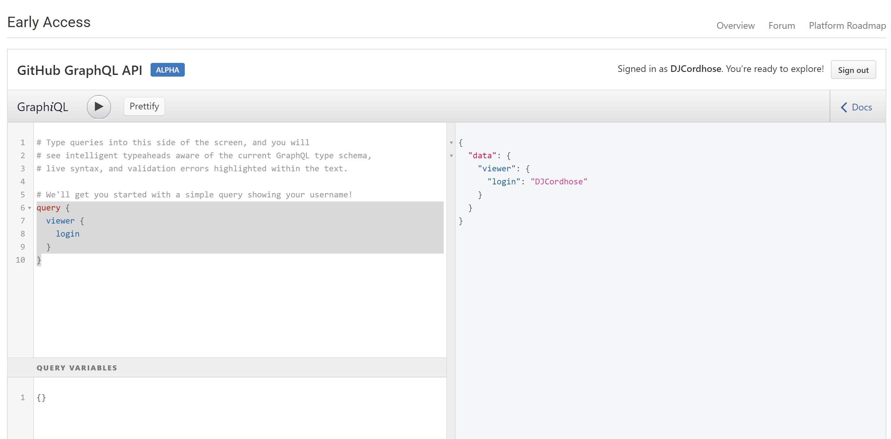
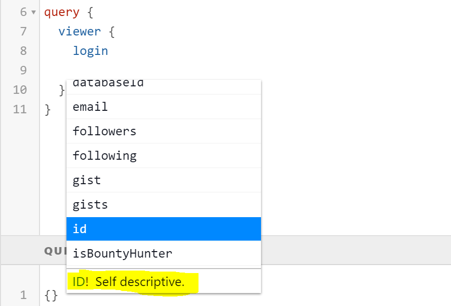
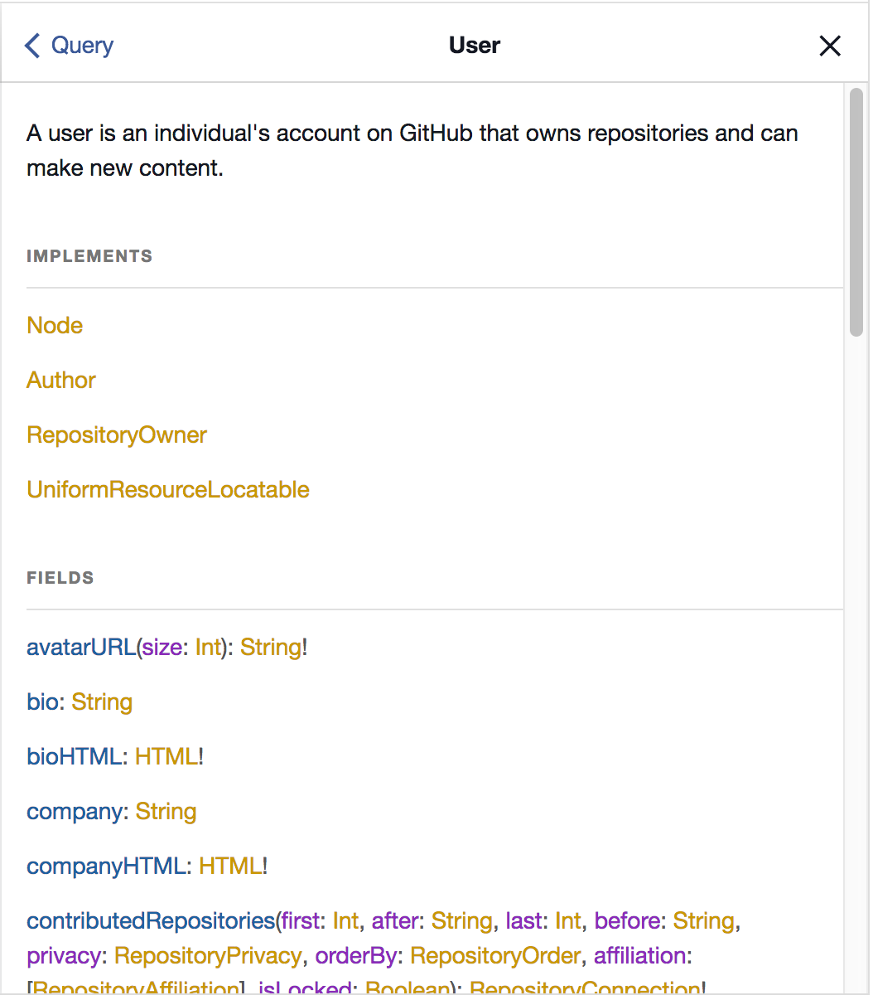
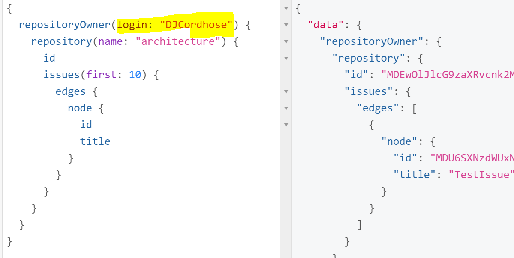
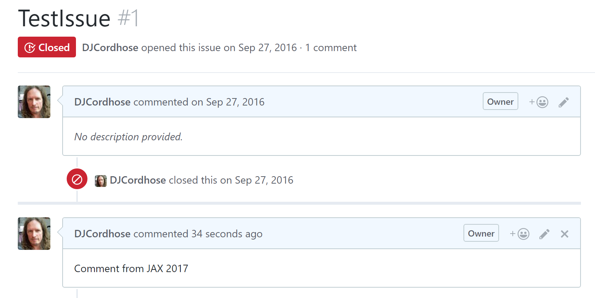
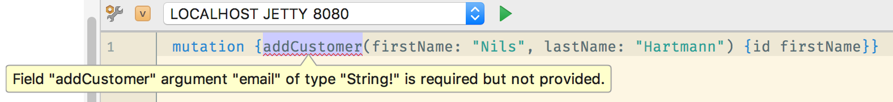
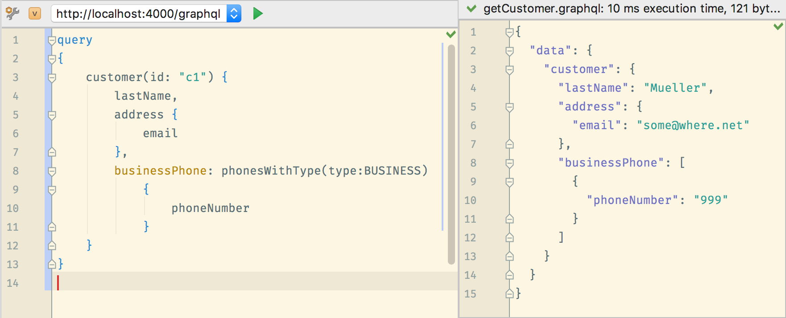
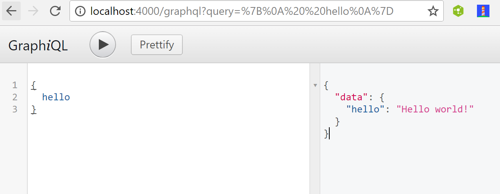

Warum GraphQL und nicht REST?
Oliver Zeigermann / @DJCordhose
Folien: https://djcordhose.github.io/graphql-sandbox/talk/2017_graphql_jax.html
GraphQL
A query language for your API
GraphQL
Eingesetzt von
- GitHub
- Neo4J (noch experimentell)
GraphQL praktisch
Beispiel: Github API
GraphiQL: API Explorer
Autocomplete
Dokumentation
Felder mit Argumenten
Queries - Daten lesen
Beispiel: Issues heraussuchen
query {
repositoryOwner(login: "DJCordhose") {
repository(name: "architecture") {
id
issues(first: 10) {
edges {
node {
id
title
}
}
}
}
}
}
Die ersten 10 Issues des Repositories architecture
Queries - Daten lesen
Ergebnis
{ "data": {
"repositoryOwner": {
"repository": {
"id": "MDEwOlJlcG9zaXRvcnk2MDE1NTgyMA==",
"issues": {
"edges": [
{
"node": {
"id": "MDU6SXNzdWUxNzk0ODczMTg=",
"title": "TestIssue"
}
}
]
}
}
}
}
}
Die ersten 10 Issues des Repositories architecture
Mutations - Daten verändern
Beispiel: Einem Issue einen Kommentar hinzufügen
mutation {
addComment(input:{
subjectId: "MDU6SXNzdWUxNzk0ODczMTg=",
clientMutationId: "Sandbox",
body: "Comment from JAX 2017"
}) {
clientMutationId
}
}
Mutations - Daten verändern
Ergebnis der Ausführung auf GitHub
GraphQL
- Query Sprache zur strukturierten Abfrage von Daten
- Typsystem zur Beschreibung der API
- Laufzeitumgebung zur Auführung der Queries auf einem Server
Abfragesprache
query {
customer (id: "c1") {
lastname, adress { email }
}
}
- Strukturierte Sprache zum Zugriff auf eine API
- Sieht aus wie JSON (ist es aber nicht)
- Abgefragt werden einzelne Felder von (verschachtelten) Objekten
- Felder können Parameter haben (ähnlich wie Funktionen)
Abfragesprache
Operations
- Eine Abfrage besteht aus mindestens einer Operation:
- Query: Eine lesende Anfrage
- Mutation: Eine Anfrage zum Schreiben/Verändern von Daten
- Eine Operation kann Parameter und einen Rückgabewert haben
Typsystem
Beschreibt die API (Objekte und Operations)
- Wird von GraphQL verwendet, um eine Anfrage zu validieren
- Skalare Typen, Objekte, Interfaces, Listen, Enums, ...
- Fehlerhafte Anfragen werden abgelehnt
- Grundlage für Tool-Support (Syntax Checking, Dokumentation, ...)
Runtime
Server zum Ausführen von GraphQL Anfragen
- Bibliotheken für diverse Sprachen vorhanden
- Parsen und Validieren der Anfragen
- Serialisieren der Antworten
- Ermitteln der Daten (z.B. aus Datenbank) muss selber programmiert werden
Motivation: Wozu eigentlich GraphQL?
Perfektes Fetching
- Liefert genau das was man braucht, weder mehr noch weniger
-
Weder Over- noch Underfechting notwendig
- Man bekommt alle Daten mit genau einem Request
- Man bekommt nicht mehr Daten als man braucht
- wichtig bei schlechten Verbindungen, z.B. mobil
- Was man bekommt ist explizit in der Query angegeben
Getypte API Beschreibung
- Mehr Anleitung durch getypte Beschreibung
- Automatische Validierung durch GraphQL
- Fehlermeldungen in der Entwicklung und zur Laufzeit 
Flexibilität und Entkopplung
- Client kann beliebige Queries absetzen
- idealerweise keine Aufwände im Server für neue Schnittstellen
- Client- und Server-Team können getrennt voneinander entwickeln
- Erweiterungen/Änderungen ohne Versionierung der API möglich
Einheitlichkeit
- Es gibt nur noch einen Endpunkt
- APIs haben einen ähnlichen Aufbau
- Kommunikation auf jeden Fall über JSON
- Welche Felder wirklich benutzt werden kann überprüft und getrackt werden
GraphQL Server
Implementierung in Java: graphql-java
Hello World: curl
curl -X POST \
-H "Content-Type: application/json" \
-d '{"query": "{ hello }"}' \
http://localhost:8080
Antwort:
{"data":{"hello":"Hello world!"}}
IDEA Unterstützung
Typ-Deklaration mit Annotations
public class Customer {
@GraphQLField
@GraphQLNonNull
private String id;
@GraphQLField
private String lastName;
@GraphQLField
private Address address;
@GraphQLField
private List<Phone> phones;
}
Felder mit Parametern
enum PhoneType { BUSINESS, PRIVATE }
public class Customer {
private List<Phone> phones;
@GraphQLField
public List<Phone> phonesWithType(
@GraphQLName("type") PhoneType type) {
return phones.stream()
.filter(phone -> phone.getPhoneType() == type)
.collect(Collectors.toList());
}
}
Servlet
import graphql.servlet.SimpleGraphQLServlet;
public class CustomerGraphQLServlet extends SimpleGraphQLServlet {
public CustomerGraphQLServlet() {
super(CustomerSchema.createCustomerQuerySchema(), null);
}
}
import graphql.annotations.GraphQLAnnotations;
import graphql.schema.GraphQLObjectType;
import graphql.schema.GraphQLSchema;
public class CustomerSchema {
public static GraphQLSchema createCustomerQuerySchema() {
// Define the Customer-Type based on Annotations
final GraphQLObjectType customerType =
GraphQLAnnotations.object(Customer.class);
GraphQLSchema schema = GraphQLSchema.newSchema()
// Add the "Query" type to Schema (required)
.query(buildCustomerQueryType(customerType))
// Add the "Mutation" type to Schema (optional)
.mutation(buildCustomerMutationType(customerType))
.build();
return schema;
}
}
Was passiert in der Query?
GraphQLObjectType buildQueryType(GraphQLObjectType customerType) {
return newObject()
.field(newFieldDefinition()
// set the name
.name("customer")
// declare return type of the query
.type(customerType)
// define args for the query
.argument(new GraphQLArgument("id",
new GraphQLNonNull(GraphQLID)))
// implement fetch logic
.dataFetcher(environment -> {
final String id = environment.getArgument("id");
return customerService.findCustomerById(id);
}).build())
.build();
}
Was passiert in der Mutation?
Analog zum Query
Im DataFetcher wird Logik zum Speichern implementiert
GraphQLObjectType buildMutationType(GraphQLObjectType customerType) {
return newObject()
.field(newFieldDefinition()
.name("addCustomer")
.type(customerType)
.argument(. . .)
.dataFetcher(environment -> {
final String lastName = environment.getArgument("lastName");
final String email = environment.getArgument("email");
final Customer newCustomer = customerService
.newCustomer(lastName, email);
return newCustomer;
}).build())
.build();
}
Die JavaScript-Referenz-Implementierung
Hello World: GraphiQL
Typ-Deklarationen
type Customer {
# Mandatory field (note the !)
id: ID!
firstName: String
address: Address
# List of Phones
phones: [Phone]
# Field with (mandatory) argument
phonesWithType(type: PhoneType!): [Phone]
}
# Enum Value
enum PhoneType { PRIVATE, BUSINESS }
type Phone { type: PhoneType!, number: String! }
Typ-Deklarationen
Queries und Mutations
type Query {
hello: String
}
type Query {
customer(id: ID): Customer
}
type Mutation {
addCustomer(lastName: String, email: String!): Customer!
}
Passende Query

Code für Schema
const { buildSchema } = require('graphql');
const customerSchema = buildSchema(`
type Customer { . . . }
type Query {
hello: String!
customer(id: ID!): Customer
}
type Mutation {
addCustomer(lastName: String, email: String!): Customer!
}
`);
Code für Resolver
const root = {
// Query Implementations
hello: () => "Hello, World",
customer: ({id}) => CUSTOMERS.find(p => p.id === id),
// Mutation
addCustomer: ({lastName, email}) => CUSTOMERS.push(...)
};
const graphqlHTTP = require('express-graphql');
app.use('/graphql', graphqlHTTP({
schema: customerSchema,
rootValue: root,
// enable GraphiQL Browser
graphiql: true
}));
Customer-Klasse
class Customer {
constructor(id, firstName, lastName, address, phones) {
this.firstName = firstName;
// more assignments. . .
}
phonesWithType({ type }) {
return this.phones.filter
(phone => phone.phoneType === type);
}
}
Server-Bibliotheken
Client-Bibliotheken
Fazit
Müssen wir jetzt alle GraphQL machen?
Es kommt drauf an...
- REST ist immer noch de-facto-Standard
- Serverseitige Standard-Bibliotheken für GraphQL fehlen zum Teil noch
- GraphQL-Queries werden mit POST gemacht, kann Probleme beim Caching bedeuten
- Für serverseitige Kommunikation (Microservices) scheinen binäre, getypte Protokolle wie http://www.grpc.io/ noch geeigneter
HTTP2
- Erlaubt das Senden vieler Requests über dieselbe Verbindung
- Macht das Over- und Underfetching-Argument schwächer